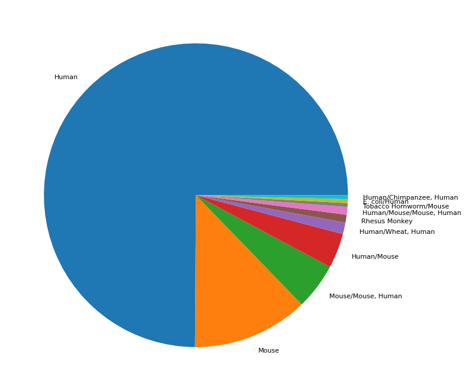
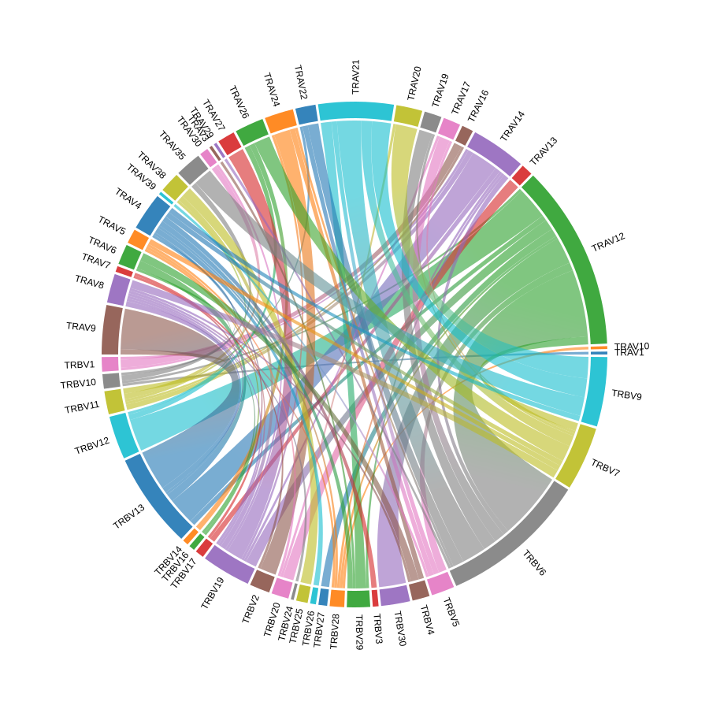
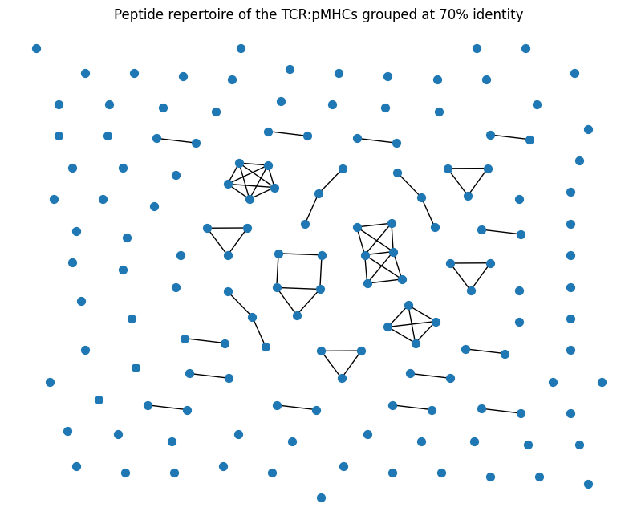
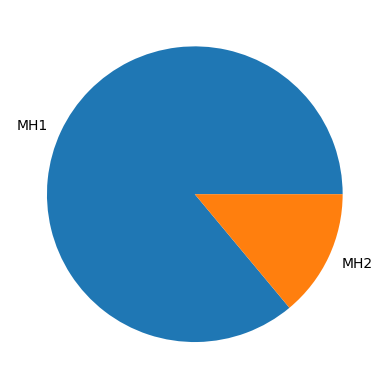
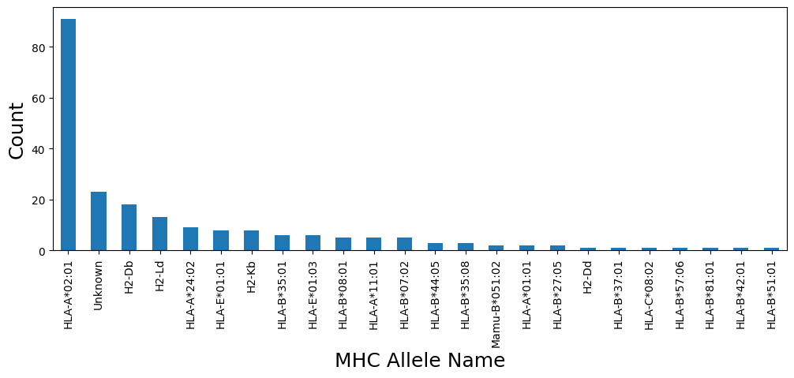
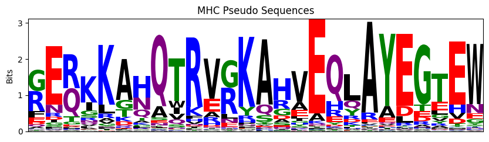

Data Summary
Summary of the selected structure for this project and the similarity of the TCR:pMHCs across different folds of the dataset.
[1]:
import re
import logomaker
import matplotlib.pyplot as plt
import networkx as nx
import numpy as np
import openchord
import pandas as pd
import plotly.graph_objects as go
from pyxdameraulevenshtein import damerau_levenshtein_distance
Summary of data selection workflow for TCR:pMHC structures
[2]:
with open('../data/logs/select_stcrdab_tcr_pmhc_structures.log', 'r') as fh:
log = fh.read()
[3]:
info_messages = [line for line in log.split('\n') if 'INFO:' in line]
count_pattern = re.compile(r'Number of structures: (\d+)')
structure_counts = [
int(re.search(count_pattern, line).group(1)) for line in info_messages if 'Number of structures:' in line
]
structure_count_line_numbers = [
line_number for line_number, line in enumerate(info_messages) if 'Number of structures:' in line
]
count_contexts = [
info_messages[line_number - 1].split('INFO: ', 1)[-1] for line_number in structure_count_line_numbers[1:]
]
[4]:
selection_df = pd.DataFrame(
{
'source': ['STCRDab', *count_contexts[:-1]],
'target': count_contexts,
'count': structure_counts[1:],
}
)
reject_df = selection_df.copy()
reject_df['target'] = 'Reject'
reject_df['count'] = (
np.concatenate([np.array([structure_counts[0]]), selection_df['count'].to_numpy()[:-1]]) - selection_df['count']
)
selection_df = pd.concat([selection_df, reject_df])
selection_df
[4]:
| source | target | count | |
|---|---|---|---|
| 0 | STCRDab | Selecting structures (TCRs: abTCR, MHCs: MH1, ... | 429 |
| 1 | Selecting structures (TCRs: abTCR, MHCs: MH1, ... | Screening structures above 3.50 Å resolution | 419 |
| 2 | Screening structures above 3.50 Å resolution | Removing structures missing residues | 356 |
| 3 | Removing structures missing residues | Removing structures within 2.00 Å RMSD | 251 |
| 0 | STCRDab | Reject | 529 |
| 1 | Selecting structures (TCRs: abTCR, MHCs: MH1, ... | Reject | 10 |
| 2 | Screening structures above 3.50 Å resolution | Reject | 63 |
| 3 | Removing structures missing residues | Reject | 105 |
[5]:
plot_df = selection_df.copy()
unique_source_target = list(np.unique(plot_df[['source', 'target']].to_numpy().flatten()))
mapping_dict = {k: v for v, k in enumerate(unique_source_target)}
plot_df['source'] = plot_df['source'].map(mapping_dict)
plot_df['target'] = plot_df['target'].map(mapping_dict)
fig = go.Figure(
data=[
go.Sankey(
node={
'pad': 15,
'thickness': 20,
'line': {'color': 'black', 'width': 0.5},
'label': unique_source_target,
},
link={
'source': plot_df['source'],
'target': plot_df['target'],
'value': plot_df['count'],
},
)
]
)
fig.update_layout(title_text='Selected Structures Sankey Diagram', font_size=10, width=1000, height=600)
fig.show()
Data type cannot be displayed: application/vnd.plotly.v1+json
Summary of dataset
[6]:
summary_df = pd.read_csv('../data/interim/structures_summary.csv')
[ ]:
plt.figure(figsize=(8, 8))
summary_df['species'].value_counts().plot.pie(textprops={'fontsize': 8})
plt.ylabel('')
plt.tight_layout()
plt.show()

TCR V-gene pairings
[ ]:
counts = summary_df.value_counts(['v_alpha', 'v_beta'])
labels = sorted(
np.concatenate(
[
summary_df['v_alpha'].dropna().unique(),
summary_df['v_beta'].dropna().unique(),
]
).tolist()
)
num_labels = len(labels)
adjacency_matrix = np.zeros((num_labels, num_labels), dtype=int)
for i in range(num_labels):
for j in range(i + 1, num_labels):
try:
adjacency_matrix[i, j] = counts[labels[i]][labels[j]]
except KeyError:
adjacency_matrix[i, j] = 0
adjacency_matrix = np.maximum(adjacency_matrix, adjacency_matrix.transpose())
fig = openchord.Chord(adjacency_matrix, labels)
fig.colormap = list(plt.rcParams['axes.prop_cycle'].by_key()['color'])
fig.radius = 300
fig.padding = 150
fig.font_size = 12
fig.show()

Similarity of peptides
[9]:
df_annotated_no_dup_peptides = summary_df.drop_duplicates(['peptide'])
peptide_sequences = df_annotated_no_dup_peptides['peptide'].to_numpy()
[10]:
distance_matrix = np.zeros((peptide_sequences.shape[0], peptide_sequences.shape[0]), dtype=int)
for i in range(peptide_sequences.shape[0]):
for j in range(i + 1, peptide_sequences.shape[0]):
distance_matrix[i, j] = damerau_levenshtein_distance(peptide_sequences[i], peptide_sequences[j])
distance_matrix = np.maximum(distance_matrix, distance_matrix.T)
print(
f'The average levenshtein distance between all peptide sequences is {np.average(distance_matrix):.2f} edits',
f'with an standard deviation of {np.std(distance_matrix):.2f} edits.',
)
The average levenshtein distance between all peptide sequences is 9.19 edits with an standard deviation of 2.10 edits.
[11]:
CUTOFF_PERCENT = 70
sequence_lengths = np.array([len(seq) for seq in peptide_sequences])
grid1, grid2 = np.meshgrid(sequence_lengths, sequence_lengths)
max_lengths = np.maximum(grid1, grid2)
sequence_percent_identities = ((max_lengths - distance_matrix) / max_lengths) * 100
similar_peptides = sequence_percent_identities > CUTOFF_PERCENT
[12]:
G = nx.Graph()
G.add_nodes_from(range(peptide_sequences.shape[0]))
for i in range(1, peptide_sequences.shape[0]):
for j in range(i + 1, peptide_sequences.shape[0]):
if similar_peptides[i, j]:
G.add_edge(i, j, weight=sequence_percent_identities[i, j] / 100)
[ ]:
plt.figure(figsize=(10, 8))
plt.title(f'Peptide repertoire of the TCR:pMHCs grouped at {CUTOFF_PERCENT}% identity')
nx.draw(
G,
node_size=50,
pos=nx.drawing.nx_agraph.graphviz_layout(G, prog='neato'),
)
plt.show()

Proportion of MHC types
[ ]:
summary_df['mhc_type'].value_counts().plot.pie()
plt.ylabel('')
plt.show()

[15]:
summary_df[['mhc1', 'mhc2']] = summary_df[['mhc1', 'mhc2']].fillna('Unknown')
[ ]:
summary_df.query("mhc_type == 'MH1'")['mhc1'].value_counts().plot.bar(figsize=(12, 4))
plt.ylabel('Count', fontsize=18)
plt.xlabel('MHC Allele Name', fontsize=18)
plt.show()

[ ]:
probs = logomaker.alignment_to_matrix(summary_df['mhc_pseudo'], to_type='information')
logomaker.Logo(probs, color_scheme='chemistry')
plt.title('MHC Pseudo Sequences')
plt.ylabel('Bits')
plt.xticks([])
plt.show()
